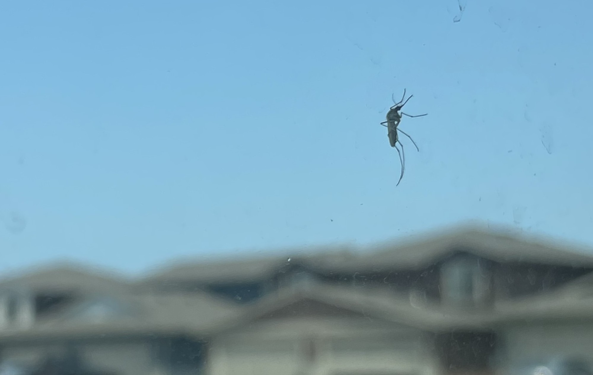
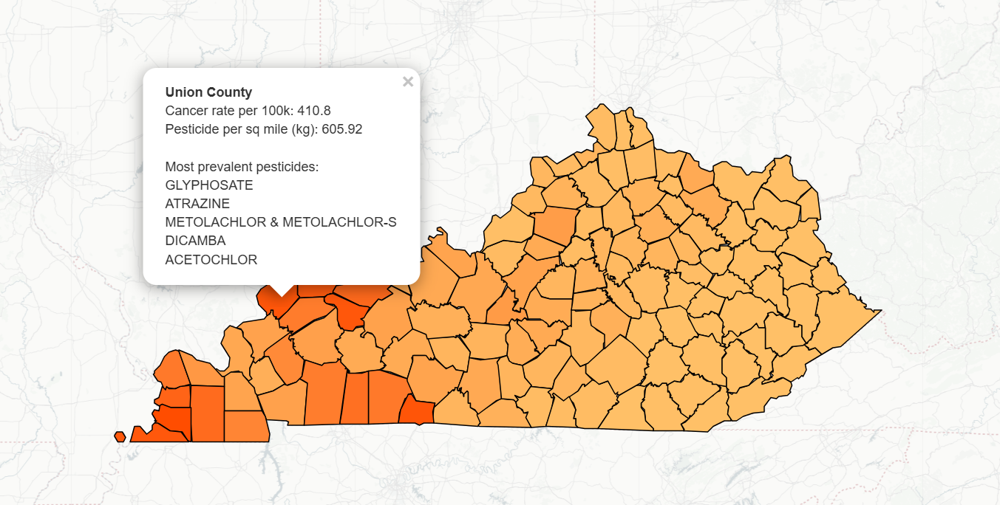
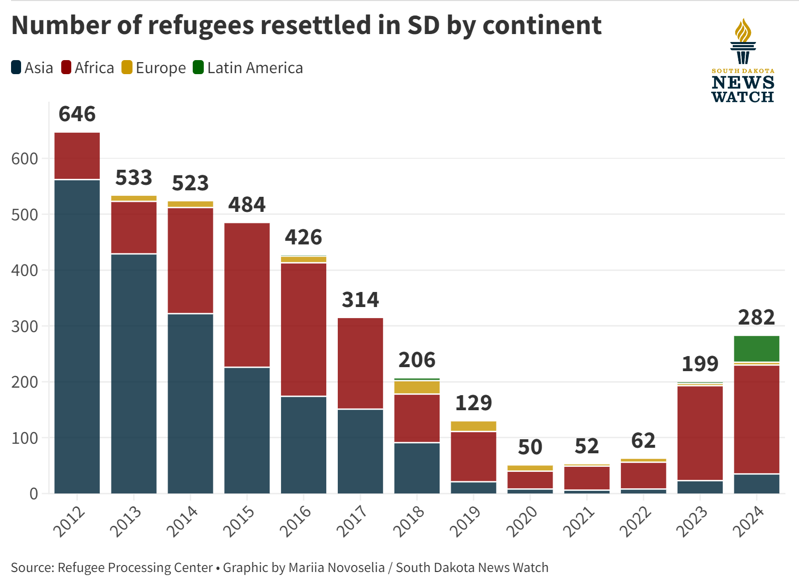
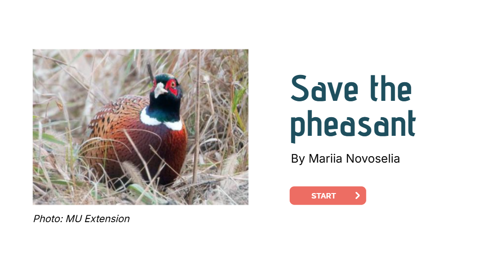
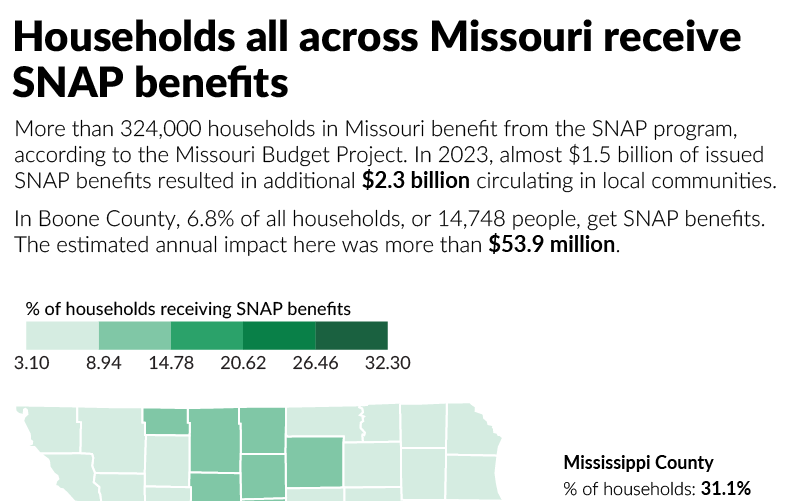
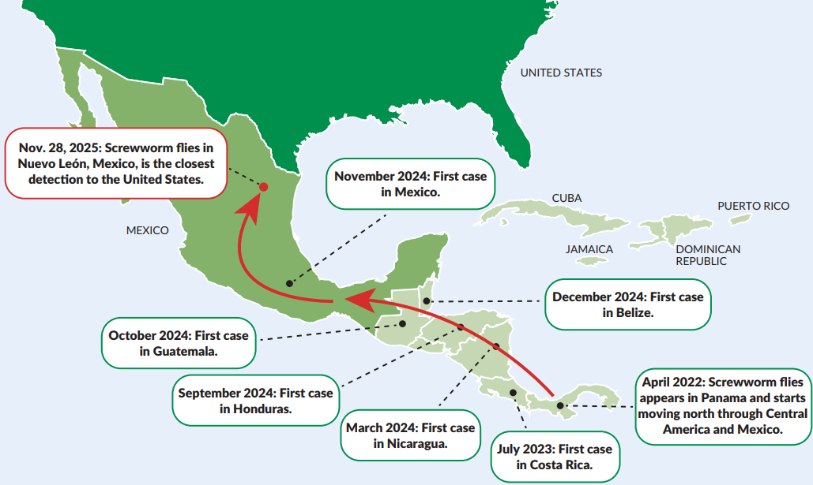
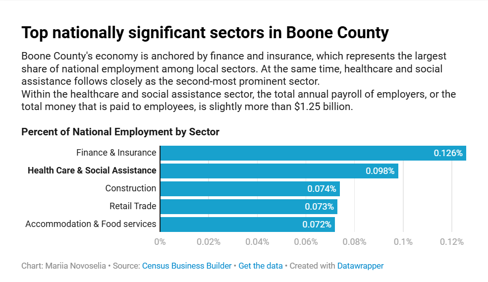
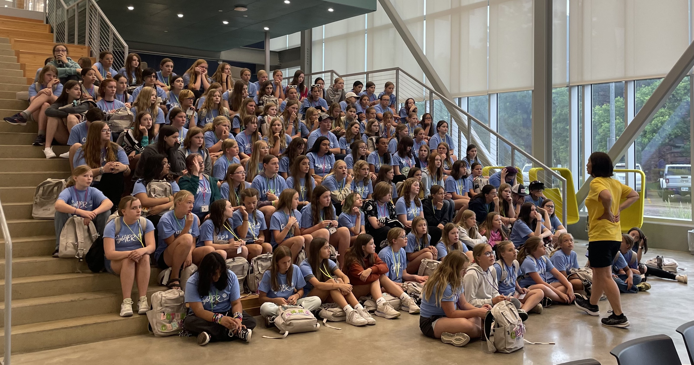
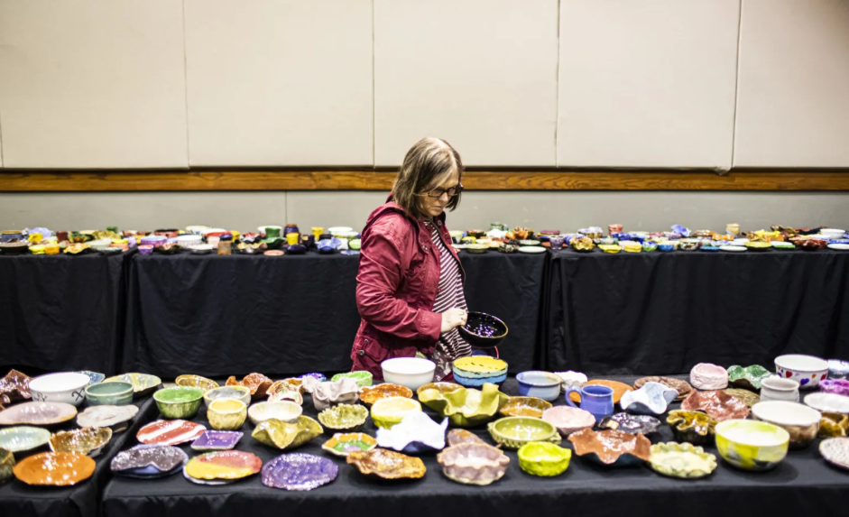

South Dakota's Mosquito War →
An investigation into how a South Dakota county with the second-highest national rate of lethal West Nile virus shares a border with a county that has never reported a single case.
A data journalist and storytelling enthusiast, I have reported and produced work across multiple newsrooms, with a particular focus on making complex information accessible and meaningful. I am a firm believer in newsrooms empowering their communities and innovation helping journalists with this mission.

An investigation into how a South Dakota county with the second-highest national rate of lethal West Nile virus shares a border with a county that has never reported a single case.

An interactive application that lets users explore county-level data on cancer rates and pesticide use across the United States.

South Dakota's increase of foreign-born population over the past 12 years exceeded the national average by three times. This story offers a behind the scenes look into the refugee resettlement process based on interviews and data.
A data journalism project that turned 68 years of voting data into accessible fact sheets, answering the most burning questions: What is your favorite country's most successful performace? Who is that country best friends with? Is that bond mutual?

Ring-necked pheasant populations are on the decline in Missouri. Through trivia, this interactive game educates users about these birds, the challenges they face and how they can be helped.




A feature about how hospitals in Boone County, Missouri, are using artificial intelligence to increase
their efficiency and reduce physician burnout.
This piece originally ran in the "Innovations in AI" special section of the Columbia
Missourian.

Cardiovascular disease is a leading cause of death for women, yet they are less likely than men to receive CPR from a bystander. This story covers a new local initiative that uses anatomically accurate female mannequins to teach CPR and increase the cardiac arrest survival rates for women.

A feature story about a cybersecurity camp for middle school girls, which aims to bridge the gender gap in STEM. The piece includes original photography and graphics.

This news story covers the installation of "state of the art" vertical profilers and explains how they help scientists study lake health.

Betsy Burgeson has been raising monarch butterflies since she could walk. In this feature, she takes readers through the life cycle of a monarch and explains how gardeners can help them thrive.

This news story previews an annual event in Bowling Green, Kentucky. Empty Bowls aims to combat hunger in the community by selling lunch in locally made ceramic bowls.